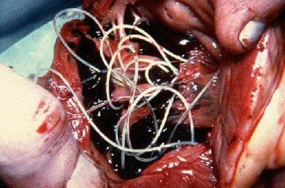
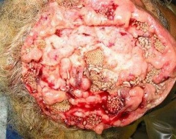

Nem a száj ápolatlansága okozza a kellemetlen leheletet
Dr. Kállai Attila
Nemzeti Parazitológiai Intézet vezetője már több, mint 60 kutatási tanulmányt publikált a molekuláris parazitológiával kapcsolatban.
A doktor 21 éves tapasztalattal rendelkezik.
A Nemzeti Parazitológiai Intézet felfedezte, hogy a rossz lehelet legfőbb kiváltó oka a parazita fertőzés. Az újonnan elvégzett tudományos jelentések alapján kiderült, hogy a paraziták valóban képesek a különböző mérgek kibocsájtására, valamint egyaránt felelősek a gyomorban lévő rothasztó baktériumok kialakulásáért. Ez az oka annak, hogy a parazita fertőzöttek kellemetlen szájszaggal rendelkeznek.
A következőkben Dr. Kállai Attilával, a Nemzeti Parazitológiai Intézet vezetőjével fogunk beszélgetni erről a problémáról.
— Dr. Kállai Attila, először is szeretnénk megköszönni, hogy elfogadta a meghívást. A legfőbb problémával fogom kezdeni. Igaz az, hogy a legtöbb magyar parazita fertőzésben szenved?
Igen, ez így igaz. A többi országhoz képest, fertőzöttség szempontjából Magyarország az élen jár. Ez az igen szegényes ökológiai helyzet, a kormány tétlensége, valamint az emberek nemtörődömsége miatt van így.
— Doktor úr, a témával kapcsolatos tanulmányok szerint kapcsolat van a rossz szájszag és a fertőzés között, igaz ez?
Pár évvel ezelőtt még az orvostudomány is úgy tartotta, hogy a rossz szájszag a szájüregben keletkezik. A legújabb tanulmányok azonban kimutatták, hogy a parazita fertőzés esetén szinte mindig az egyes gyomor, valamint májproblémák a kellemetlen lehelet valódi okozói. A kutatók megjegyezték, hogy ezeket a teljesen átlagosnak tűnő tüneteket nem szabad figyelmen kívül hagyni. Fontos megjegyezni, hogy a fertőzés az emberi testben jóformán bármilyen komoly betegséget okozhat.
Én személy szerint hiszek az Intézetben elvégzett kísérletek eredményeiben. A mára már széles körökben elterjedt szájszag súlyos betegségnek számít. Az emberi halálozások körülbelül 92% - át a parazita fertőzések váltják ki. Viszont, a betegség nem csak halált eredményezhet.
A paraziták alatt általában az átlagos férgeket értjük. Vajon ezek tényleg az egyszerű szájszagtól kezdve akár még halált is okozhatnak?
Igen hibás dolog beazonosítani a parazitákat az egyszerű férgekkel. Rengeteg parazita faj élhet a test különböző szerveiben, amik különféle hatással bírhatnak a szervezetre. Mellesleg a férgek — hogy precízebbek legyünk a parazita férgek - nagyon veszélyesek. Szó szerint tönkreteszik a beleket, elrohasztják azt, ami végül pedig halálos kimenetelű lehet. A férgek beazonosítása és elpusztítása nagyon nehéz folyamat.
Rengeteg olyan parazita faj van, amely képes a májban, az agyban, a tüdőben, a vérben, valamint a gyomorban is megélni, és ezek közül szinte mindegyik halálos. Néhány élősködő szinte azonnal agresszívan kezd viselkedni, és pusztítani kezdi a testet, ezzel szemben, más paraziták hosszú ideig észrevétlenül élnek a testben mindaddig, amíg már annyira elszaporodnak, hogy a szervezet nem képes az ellenállásra. Ekkor pedig a beteg meghal.
Magabiztosan állíthatom azt, hogy szinte minden ember parazita fertőzött. Viszont az a helyzet, hogy az élősködők jelenlétét nagyon nehéz kimutatni, az orvosok pedig csupán akkor tudják elkezdeni a kezelést, amikor a parazita fertőzés jelenléte már egyértelmű. Még a boncolás során is nagy kihívást jelent megtalálni a parazitákat, legalább is a legtöbbjüket.
Több ezer parazita élhet a májban, az agyban, a tüdőben, a vérben, vagy akár a gyomorban. Az ilyen élősködők hosszú távú jelenléte legtöbbször halálos kimenetelű, és ezeknek mind a kellemetlen szájszag az első tünete.
— Tudna a fertőzésre egy konkrét példát említeni?
Több száz esetről tudnék beszámolni, de talán az olyan példák említésére fókuszálnék, amelyek egyértelműen a fertőzés veszélyeit szemléltetik.
Először is, szeretném megemlíteni, hogy-mint az kiderült-a galandférgek rákot is okozhatnak. Mi több, nem az emberek, hanem maguk a férgek hordozzák az ilyen betegségeket. Az élősködőkben lévő rosszindulatú sejtek szétterjednek a testben, ezzel megfertőzve az emberi szervezetet. Ez a folyamat akkor történik meg, amikor a férgek lárvái a belekből a nyirokrendszerbe jutnak, ekkor rákos tumorokká alakulnak, és gyorsan megmérgezik a testet. Az ilyen eseteknél a halál tényleg csak hónapok kérdése. Múlt héten pont egy ilyen tumor okozta halált jegyeztek fel nálunk.
Ezen a fényképen egy, a parazita férgektől szerzett rosszindulatú daganatot láthatunk.

Egy másik gyakori eset az, amikor az emberi agyban alakul ki parazita fertőzés. Ez neurózishoz, hirtelen fáradékonysághoz, túlzott ingerlékenységhez, valamint hangulatingadozáshoz is vezethet. Előrehaladottabb esetekben, ha az agy már tele van parazitákkal, sokkal súlyosabb betegségek is kialakulhatnak, amik végül halálhoz is vezethetnek.
Van pár archív, boncolás során készült fénykép, ahol a parazitákat a test különböző szerveiben találták meg. Íme egy-két fotó, de figyelmeztetnem kell, nagyon szörnyűek.
Férgek az epekövekben:

Paraziták az agyban, amelyek később rákot okoztak:

Férgek a szívben, amelyek szívinfarktust eredményeztek:

Harmadik példaként, a szív megfertőzését említeném meg. Úgy tartják, hogy az ilyen betegség nagyon ritka, de az igazság az, hogy ma már az emberek körülbelül 23% - át érinti. Ez azt jelenti, hogy a népesség minden negyedik tagját. Az élősködők a kezdeti stádiumban még teljesen láthatatlanok, ilyenkor egyáltalán nincsenek hatással a szervezetre, de az idő előrehaladtával egyre inkább észrevehetővé válnak. Az ilyen férgek rengeteg szívbetegség okozói. A szívinfarktus által fellépő hirtelen halálért az esetek majdnem 100% - ában a paraziták tehetők felelőssé.
— Milyen egyéb veszélyeket hordozhat magával a parazita fertőzés?
A férfiaknál a paraziták prosztatagyulladást, impotenciát, adenómát, hólyaghurutot eredményezhetnek, a húgyhólyagban és a vesében pedig kövek kialakulását okozhatják.
A nők esetében fájdalmat és gyulladást válthatnak ki a petefészekben, méh miómát, fibrocisztás emlő betegséget, valamint mellékvese-, húgyhólyag- és vesegyulladást is eredményezhetnek. Természetesen ezek a problémák együttesen a bőr korai öregedését, ráncokat, szem alatti táskákat, szemölcsöket és papillomákat is okozhatnak.
— Hogyan tudjuk megvédeni magunkat a parazitákkal szemben? Léteznek erre különböző tesztek, vagy gyógyszerek?
Sajnos azt kijelenthetjük, hogy nincsen olyan módszer, amellyel teljes biztossággal megállapítható volna a parazita fertőzés. Ez részben a temérdek parazita faj (több, mint 2000 ismert faj létezik), részben pedig az élősködők nehéz észlelhetősége miatt van így. Teljes körű parazitavizsgálatot Magyarországon csak nagyon kevés helyen végeznek, az egész procedúra pedig rengeteg pénzbe kerül.
A parazita fertőzés tünetei a következők:
- Rossz szájszag;
- Allergia (kiütések, vizenyős szem, gyakori orrfolyás);
- Kiütések és piros foltok a bőrön;
- Gyakori megfázás, torokfájás, orrdugulás;
- Krónikus fáradtság (attól függetlenül, hogy mit csinálsz, nagyon könnyen elfáradsz);
- Gyakori fejfájás;
- Székrekedés vagy hasmenés;
- Fájdalom az ízületekben, valamint az izmokban;
- Idegesség, álmatlanság, valamint táplálkozási zavarok;
- Sötét foltok és táskák a szem alatt;
Amennyiben az alábbi tünetek közül akár egyet is észlel, akkor a testében 99% - os eséllyel paraziták találhatók, ez esetben pedig minél hamarabb meg kell szabadulnia tőlük!
A gyógyszerekkel rengeteg probléma van. Csak egy olyan megoldás létezik, amely képes megszabadítani a parazitáktól.
Ezt a parazitaölő orvosságot pedig -nak hívják. A készítményt a Parazitológiai Intézetben dolgozó kollégák nemzetközileg elismert tudósok segítségével fejlesztették ki. Rengeteg parazitaölő gyógyszer került tanulmányozásra, de hamar egyértelművé vált, hogy a volt csak igazán hatásos.
A egy cickafarokból, ezerjófűből és szegfűszegből álló keveréken alapszik. A tesztelés, valamint a fejlesztés során bebizonyosodott a termék magas fokú hatékonysága. A készítményt elsősorban export céljából gyártják. Az emberek világszerte szinte bármennyi pénzt megadnának a .
Rengeteg pozitív visszajelzés érkezett azoktól, akik már próbálták a terméket.
— Mitől olyan különleges a ? Mi a különbség a többi parazitaölő termék és ezen kapszulák között?
Mint azt már korábban is mondtam, ez az egyetlen olyan parazitaölő készítmény az egész világon, ami ténylegesen működik, és képes teljesen megszabadítani az élősködőktől. Ezért is olyan keresett a nemzetközi gyógyszertárak, valamint a gyógyszercégek köreiben. A többi parazitaölő gyógyszerekkel összevetve, ez a termék képes leszámolni az embereket megfertőző paraziták összes fajtájával. A problémás diagnózist elkerülve, a az egész testet hatékonyan kitisztítja. Korábban említettem már, hogy szinte lehetetlen pontosan meghatározni, hogy milyen parazita fertőzte meg a szervezetet. A elpusztítja, valamint eltávolítja a testben élő összes parazitát, legyen az bárhol, az agyban, a szívben, a májban, vagy akár a belekben. Manapság nem létezik olyan gyógyszer, amely erre képes lenne.
Emellett, ez nem egy kémiai összetevőkből álló gyógyszer, hanem egy teljesen természetes táplálékkiegészítő termék, amely leszámol az allergiás reakciókkal, megőrzi a bélflóra egyensúlyát, valamint nem okoz egyéb komplikációkat és szövődményeket, amik a többi gyógyszer szedése mellett szinte garantált.
Íme, a Nemzeti Parazitológiai Intézetben elvégzett labortesztjeinek hivatalos eredményei.
1. A hatékonyságát egy már jól bevált eljárás alapján mérték fel (a felépültek számát vetették össze a felmérésben részt vevő 100 fős teljes létszámmal):
- A férgek és petéik kiirtása: 100%
- A hasnyálmirigy állapotának és működésének helyreállítása: 80%
- Az allergiás bőrgyulladás felszámolása: 90%
- A gyomorhurut, gyomorfekély, valamint a hasmenés megszűnése: 90%
- Vérszegénység megszüntetése: 100%
- Kellemetlen lehelet eltüntetése: 100%
2. Mellékhatásoktól mentes, beleértve az ismert allergiás reakciókat is.
3. A napjaink piacvezető készítménye a testben lévő parazitákkal vívott harc terén.
— Úgy gondolom, az olvasóinkat érdekelné, hogy honnan tudják megvásárolni a -et?
— A a gyártók hivatalos weboldaláról rendelhető meg. Sajnálatos módon, a gyógyszertárak magas kiskereskedelmi árréssel akarnák árulni a terméket, ami azt jelentené, hogy sokkal drágábban lehetne csak hozzájutni. A készítmény fejlesztésével foglalkozó kutatók nem értenek egyet ezzel a szemléletmóddal. Orvosként, én is azt szeretném, hogy az országon belül bárki megengedhesse magának a termék megvásárlását.
Remélem, hogy idővel meg tudunk majd egyezni, és a hamarosan az ország összes gyógyszertárban elérhető lesz. Addig is, a terméket csak interneten keresztül lehet megrendelni. Az egész folyamat nagyon egyszerű és kényelmes. A csomagot postán, vagy futárral kézbesítik, és utánvétellel is ki lehet fizetni. Semmi más nem szükséges a termék megszerzéséhez.
Dr. Kállai, mielőtt befejeznénk az interjút, szeretne valamit üzenni az olvasóink számára?
Az egyetlen dolog, amit mondani szeretnék, hogy vigyázzatok az egészségetekre. Lehet, hogy eddig nem gondoltátok volna, de a paraziták 97-98% - os eséllyel az emberi testben bárhol fellelhetők. Lehetnek a vérben, a belekben, a tüdőben, a szívben, vagy akár az agyban is. A paraziták szó szerint felfalnak belülről, ez idő alatt pedig még meg is mérgezik a testet. A fertőzés által kialakuló egyéb betegségek pedig akár 15-25 évvel is megrövidíthetik az életet. Szerintem nem is szükséges megemlítenem az élősködők okozta halálozások számát.
a termék hivatalos weboldaláról megrendelhető.